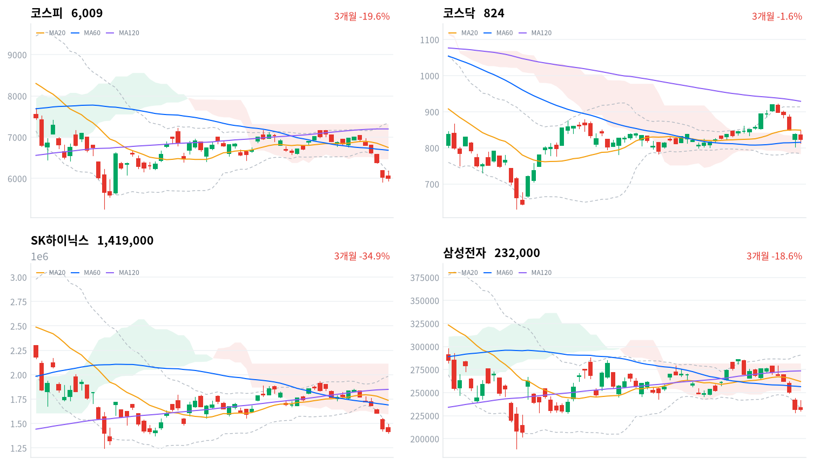

코스피는 오전 6,190선까지 반등했다가 ASML 실적 발표 뒤 반도체 장비·소부장주가 밀리며 6거래일 연속 하락했다. 그래도 외국인 순매도는 전일의 4분의 1로 줄었고, 오른 쪽은 2차전지와 해운이었다.
우리는 전일 메모리 급락을 수급 해소로 본 판단을 이어간다. 오늘 밤 미국 9월 소비자물가와 10월 16일 마감까지의 SK하이닉스 대 마이크론 흐름이 이 판단을 가른다.
코스피는 0.44% 내린 6,009로 마감해 6거래일 연속 하락했지만, 장중 내준 6,000선은 되찾았다. 오전에는 6,190선까지 반등했다. 14시 무렵 ASML 3분기 실적이 나온 뒤 반도체 장비·소부장주가 밀리면서 지수는 5,945까지 내려갔다. 외국인은 코스피에서 1조1,718억원을 순매도해(전일 4조5,789억원 순매도, 당일 잠정) 매도 규모가 전일의 4분의 1로 줄었다. 전일 급락의 중심이던 메모리 대형주는 덜 흔들렸고(삼성전자 보합), 지수를 받친 것은 2차전지와 해운이었다.
오늘은 국고채·회사채 금리를 받지 못해 채권이 무엇을 값매겼는지 볼 수 없다. 대신 거래대금이 시장의 무게를 보여 준다. SK하이닉스(5.09조원)와 삼성전자(4.03조원)가 여전히 1·2위였고 반도체 테마 ETF 28종 합산도 2.21조원으로 3위라, 손바뀜의 중심은 아직 메모리다. 언론은 오후 반락을 ASML 실적 뒤 반도체 고점 매도로 묶어 설명한다. 우리가 다르게 보는 곳은 매도가 몰린 자리다. 크게 내린 것은 장비·소부장(한미반도체 -5.02%, DB하이텍 -7.04%)이었고, 메모리 대형주는 상대적으로 버텼다.
전일 메모리 대형주의 초과 낙폭을 수급 해소로 본 판단을 이어간다. 외국인 매도가 줄어든 첫날 SK하이닉스는 1.66% 내려, 같은 기준으로 잰 마이크론(미국 10월 13일 세션 -3.62%)보다 1.96%포인트 덜 내렸다. ASML은 장비 업체라 그 실적에 따른 매도는 메모리 경쟁력과는 다른 이야기다. 다만 이 차이는 판단을 확인하는 기준인 3%포인트에 못 미치고, 외국인 순매도도 아직 판단 기준을 넘는다. 경쟁력 재평가는 하루에 끝나지 않고 반등할 때마다 매물로 나올 수 있으며, 오늘 오전 반등 뒤 오후 반락은 그 모양과도 맞는다. 그래도 오후 매도가 메모리보다 장비·소부장에 몰렸다는 점에서 수급 해소 쪽으로 본다. 두 설명은 10월 16일 마감까지 SK하이닉스가 마이크론보다 강한지, 외국인 순매도가 기준 아래로 내려오는 세션이 나오는지에서 갈린다.
오늘 등락 자체에는 큰 무게를 두지 않는다. 지수 낙폭이 작았고, 오후 반락은 오늘 밤 미국 물가 발표를 앞둔 관망과 겹쳐 방향을 말해 주지 않는다. 새로 제안할 상품은 없다. 해외주식 펀드가 보는 반도체 업종에서는 한국 메모리 매도가 진정되는 모습이 처음 나왔지만, 미국 반도체 업종의 판단을 바꿀 크기는 아니다. 전력망 투자 테마와 맞닿은 2차전지·ESS는 이달 상대 강세를 이어 갔다. 다만 LG에너지솔루션 이익에 일회성 보상금이 섞였다는 증권가 지적이 있어, 본업 이익이 따라오는지가 먼저다. 기다리는 것은 10월 14일 21:30(한국시간) 미국 9월 소비자물가와 그 뒤 마이크론의 반응, 10월 15일 앤트로픽 투자자의 날, 그리고 10월 16일 마감까지의 SK하이닉스 대 마이크론 상대 흐름과 외국인 순매도 규모다.
코스피가 10월 13일 장중 저점이자 20일 저점인 5,911 아래로 마감하면 수급 해소 해석을 철회한다. 오늘 장중 저점은 이 선보다 33포인트 남짓 위였다. 외국인 매도가 줄어든 뒤에도 지수가 새 저점을 쓴다면, 그 매도는 한 번의 수급 사건이 아니라 메모리 이익 전망을 다시 매기는 과정으로 본다.
10월 13일 판단은 유효하다. 코스피 종가가 반증선 5,911 위에서 끝나 수급 해소 해석을 그대로 둔다. 기다린 조건 가운데 미국 9월 소비자물가와 앤트로픽 투자자의 날은 아직 오지 않았고, 10월 16일까지 보기로 한 두 조건은 첫날 절반쯤 움직였다. SK하이닉스는 마이크론보다 덜 내렸지만 차이가 기준에 못 미쳤고, 외국인 순매도는 크게 줄었으나 기준 아래로 내려오지는 않았다. 놓친 부분도 있다. 어제는 지수 하락을 메모리 대형주 수급에서 찾았지만, 오늘 하락에는 장비·소부장과 금융주가 보탰다. 메모리 밖의 매도는 이 판단이 설명하지 못하는 부분으로 남긴다.
직전 미국 10월 13일 세션은 지수가 거의 움직이지 않은 가운데 메모리가 약했다. S&P500은 0.02%, 나스닥은 0.15%, 다우는 0.35% 내렸고, 마이크론은 3.62% 내렸다. 오늘 아시아에서는 대만만 올랐다. 대만가권은 0.59% 오르고 닛케이(-0.05%)·항셍(-0.13%)·상해종합(-0.89%)은 내려 네 지수 평균은 0.12% 내렸다. 코스피는 이보다 0.32%포인트 더 내려, 전일 4%포인트 넘게 벌어졌던 아시아 대비 열세가 크게 줄었다.
개장 시가는 전일 종가(6,035)보다 높은 6,062였다. 밤사이 미국 지수는 보합권이었고, 마이크론 하락은 전일 한국 메모리 급락보다 훨씬 작았다. 한국 정규장 동안 미국 선물은 S&P 선물 +0.11%, 나스닥 선물 -0.12%로 거의 움직이지 않았다. 오후 반락은 밖의 가격이 이끈 것이 아니다.
하루 범위로 보면 코스피는 5,945~6,191 가운데 아래쪽 4분의 1 부근에서 끝났다. 코스닥은 1.57% 내린 823.88로 하루 범위의 아래쪽 3분의 1에서 마감했다. 원/달러는 한국장 시간대 고점 1,341원에서 밀려 1,335원에서 마지막으로 관측돼, 외국인 매도가 이어진 날에도 원화는 강해졌다.
이날 지수는 반도체 장비·소부장과 금융주가 누르고 2차전지·해운이 받쳤다. 서울경제에 따르면 ASML은 14시 무렵 3분기 실적을 냈고, 순이익은 49억6,000만 유로로 예상(41억 유로)을 웃돌았다. 매출은 116억6,200만 유로로 사상 최대였지만 예상을 소폭 밑돌았고, 그 뒤 반도체 고점 매도가 나왔다. 신한지주는 롯데손해보험 인수 결정에 크게 내렸고, KB금융·하나금융지주도 함께 밀렸다. 2차전지는 ESS 수요 기대에, 해운은 원유운반선 운임 급등에 올랐다. 시간외 거래는 자료가 없어 마감 뒤 흐름은 가리지 못한다.
코스피는 0.44% 내린 6,009로 마감해 6거래일 연속 하락했다. 장중 6,000선을 내줬다가 되찾았지만, 종가는 여전히 볼린저 밴드 하단(6,165)과 일목 구름 아래에 있다. 코스닥은 반도체 소부장주가 크게 밀리며 1.57% 내린 823.88로 끝나, 코스피보다 더 내렸다. 머니투데이는 코스닥이 9월 18일 이후 처음으로 820선에서 마감했다고 전했다.
| 지수 | 종가 | 등락률 | 시가 | 고가 | 저가 | 전일 종가 |
|---|---|---|---|---|---|---|
| 코스피 | 6,008.81 | -0.44% | 6,062.08 | 6,190.65 | 5,944.65 | 6,035.35 |
| 코스닥 | 823.88 | -1.57% | 835.90 | 846.95 | 813.49 | 837.03 |
장중 경로에서 볼 것은 오후 반락이다. 코스피는 개장 직후 6,190선까지 올라 전일 낙폭의 일부를 되찾았고, 13:30까지 6,100선 위를 지켰다. 14시 이후 밀리기 시작해 15:00에는 5,980까지 내려갔다가 마감 무렵 다시 올라섰다. 하락 전환 시각은 ASML 실적 발표와 겹치지만, 같은 시간대에 미국 물가 발표를 앞둔 관망도 있었다. 투자자별 장중 흐름은 자료가 없어 오후 매도 주체는 가리지 못한다. 코스닥도 같은 시간대에 830선 아래로 밀렸다.

코스피·코스닥·SK하이닉스·삼성전자 3개월 일봉에 이동평균(20·60·120)·볼린저밴드·일목균형표 구름대를 겹쳐 그렸다. 상승 캔들은 녹색, 하락 캔들은 적색이다.
코스피는 세 이동평균과 일목 구름 아래, 볼린저 밴드 하단 밖에서 마감했다. 밴드 하단(6,165)을 되찾으면 일목 구름 하단(6,471)이 다음 저항이고, 20일 저점(5,911)을 내주면 종가 10% 안에는 계산된 지지선이 없다.
코스닥은 20일선 아래지만 60일선과 일목 구름 위에서 마감해 추세의 자리가 코스피보다 높다. 20일선(849)을 되찾으면 기준선(852)이 바로 위 저항이고, 구름 상단(816)과 60일선(815)을 내주면 20일 저점(800)이 다음 지지선이다.
SK하이닉스는 세 이동평균과 일목 구름 아래, 볼린저 밴드 하단 밖에서 마감했다. 밴드 하단(149만원)을 되찾으면 밴드 안으로 돌아오고, 20일 저점(140만원)을 내주면 종가 10% 안에는 계산된 지지선이 없다.
삼성전자는 세 이동평균과 일목 구름 아래, 볼린저 밴드 하단 바로 밑에서 마감했다. 밴드 하단(23만3천원)을 되찾으면 구름 하단(25만2천원)이 다음 저항이고, 20일 저점(22만8천원)을 내주면 그 아래 가까이에는 계산된 지지선이 없다.
위 레벨은 이동평균·볼린저밴드·일목균형표와 스윙 고저를 기계적으로 계산한 값이며 투자 권유가 아니다.
| 주체 | 순매수(억원) |
|---|---|
| 개인 | -3,105 |
| 외국인 | -11,718 |
| 기관 | +7,933 |
| 주체 | 순매수(억원) |
|---|---|
| 개인 | +3,904 |
| 외국인 | -2,182 |
| 기관 | -1,816 |
외국인 매도는 이어졌지만 규모가 크게 줄었다. 외국인은 코스피에서 1조1,718억원을 순매도했고(전일 4조5,789억원 순매도, 당일 잠정), 표에 있는 9월 29일 이후 열 거래일 동안 하루도 빠짐없이 순매도했다. 전일 값은 10월 13일에 집계한 잠정치에서 갱신된 수치다. 서울경제는 9월 23일부터 오늘까지 외국인의 코스피 순매도 23조819억원 가운데 79%가 SK하이닉스와 삼성전자에 몰렸다고 집계했다.
받는 쪽은 바뀌었다. 전일 2조3,169억원을 순매수한 개인은 3,105억원 순매도로 돌아섰고, 기관은 7,933억원을 순매수했다(전일 1조6,685억원 순매수). 오늘은 외국인 매도를 기관이 혼자 받은 날이다. 뉴스1은 기관이 10월 들어 LG에너지솔루션과 삼성SDI를 순매수했다고 전해, 오늘 오른 2차전지와 기관 매수의 방향이 겹친다.
코스닥에서는 외국인이 2,182억원(전일 1,339억원 순매수), 기관이 1,816억원(전일 459억원 순매수)을 순매도했다. 개인은 3,904억원을 사들였다(전일 1,908억원 순매도). 전일 코스닥을 사던 외국인과 기관이 매도로 돌아서, 코스닥 반도체 소부장 약세와 같은 방향이다.
장중 누적 수급과 프로그램 매매는 받을 수 있는 자료가 없어 싣지 않는다.
| 순위 | 종목/ETF | 구분 | 거래대금 | 비고 |
|---|---|---|---|---|
| 1 | SK하이닉스 | 개별주 | 5.09조원 | - |
| 2 | 삼성전자 | 개별주 | 4.03조원 | - |
| 3 | 반도체 테마 ETF | 테마·롱 | 2.21조원 | 28종 합산 |
| 4 | 삼성전자우 | 개별주 | 0.79조원 | - |
| 5 | KODEX CD금리액티브(합성) | 단기금리·현금성 | 0.76조원 | - |
| 6 | 삼성전기 | 개별주 | 0.75조원 | - |
| 7 | 2차전지 테마 ETF | 테마·롱 | 0.68조원 | 14종 합산 |
| 8 | SK스퀘어 | 개별주 | 0.51조원 | - |
| 9 | 삼성SDI | 개별주 | 0.51조원 | - |
| 10 | TIGER CD1년금리액티브(합성) | 단기금리·현금성 | 0.45조원 | - |
단위 백만원 원본을 조 단위로 환산했다. 같은 기초자산 ETF는 방향별로, 같은 테마 섹터 ETF는 테마별로 묶고 지수·해외 ETF는 제외했다.
거래는 여전히 메모리에 몰렸지만, 오늘 오른 2차전지도 상위에 올라왔다. 2차전지 테마 ETF 14종 합산(0.68조원)과 삼성SDI(0.51조원)가 상위 열 줄에 들었고, 반도체 쪽은 SK하이닉스·삼성전자와 반도체 테마 ETF 28종 합산이 1~3위를 지켰다. 거래대금은 사고판 양을 함께 세므로, 이 순위는 손바뀜이 어디서 컸는지를 보여 줄 뿐 자금의 방향을 말하지 않는다. 상위 열 줄에 레버리지·인버스 상품은 없고, 단기금리를 따르는 CD금리 상품 두 종이 대기 자금 자리를 지켰다.
업종별로는 반도체 밖의 폭넓은 상승과 반도체 안의 좁은 하락이 갈렸다. 해운사는 11종목 가운데 9종목, 전기제품은 68종목 가운데 47종목이 올랐다. 철강은 55종목 가운데 34종목, 화학은 122종목 가운데 83종목이 올라 상승이 업종 전반에 퍼졌다. 반면 반도체와반도체장비는 업종 등락률이 0.57% 하락에 그쳤지만 172종목 가운데 28종목만 올라, 안쪽은 등락률보다 훨씬 약했다.
대표 ETF 기준 섹터 막대에서 2차전지는 하루 +2.89%, 한 달 +2.23%로 12개 섹터 가운데 한 달 수익률이 플러스인 유일한 섹터다. 반도체는 하루 -4.37%, 한 주 -15.58%로 가장 약했고, 은행(-2.83%)이 그 뒤를 이었다.
장비·소부장주가 크게 밀렸고 SK하이닉스도 내렸다(SK하이닉스 -1.66%, 한미반도체 -5.02%, 이수페타시스 -5.12%, DB하이텍 -7.04%). 서울경제는 ASML 실적 발표 뒤 반도체 고점 매도와 미국 물가 발표 전 관망이 겹쳤다고 전했다. 한미반도체·이수페타시스·DB하이텍은 확인된 재료 없음. 세 종목 모두 서울경제 집계에서 지난 3주 외국인 순매수 상위에 올랐던 종목이다.
2차전지는 ESS 수요 기대에 크게 올랐다(LG에너지솔루션 +2.93%, 삼성SDI +5.54%, 엘앤에프 +6.5%). 이투데이에 따르면 LG에너지솔루션의 3분기 잠정 영업이익은 7,560억원이었고, 증권가는 여기에 북미 합작사 청산 보상금 효과가 크다고 본다. 하나증권은 삼성SDI의 4분기 ESS 신규 수주가 임박했다고 전망하면서도, 일회성 보상금과 본업 개선을 구분해야 하고 추가 상승 여력이 7월보다 줄었다고 짚었다.
신한지주는 롯데손해보험 인수 결정 다음 날 크게 내렸다(신한지주 -4.71%). 한국경제에 따르면 신한금융 이사회는 10월 13일 롯데손보 지분 77.04%를 6,933억원에 인수하기로 의결했다.
해운주는 원유운반선 운임 급등에 크게 올랐다(팬오션 +10.53%, HMM +5.9%). 한국경제는 호르무즈 해협 봉쇄 뒤 탱커 사업을 키운 팬오션이 수혜를 받고, HMM에는 컨테이너 운임 반등 기대와 신한투자증권의 투자의견 상향이 겹쳤다고 전했다. NH투자증권은 두 회사의 3분기 실적이 컨센서스를 웃돌 것으로 예상했다.
한미약품은 10% 넘게 내렸다(한미약품 -10.71%). 코리아스톡뉴스는 국산 비만신약 허가 뒤 차익실현과 키움증권의 3분기 영업이익 추정(384억원, 전년 대비 -30%)·목표가 하향을 원인으로 들었고, 재경일보는 공식 악재 공시는 없다고 전했다.
이 밖에 SK이노베이션(+4.08%)과 POSCO홀딩스(+3.34%)가 올랐고, 삼성화재(-4.9%)·삼성생명(-3.71%)은 은행주와 함께 내렸다. SK이노베이션 상승의 원인을 설명한 기사는 찾지 못했다.
원화는 외국인 매도가 이어진 날에도 강해졌다. 한국장 시간대 원/달러는 09:30 고점 1,341원에서 밀려 15:30 1,335원에서 마지막으로 관측됐고, 머니투데이는 주간거래 종가를 1,338원대로 전했다. 국고채·회사채·CD 금리와 기준금리는 오늘 받지 못해 금리 표를 싣지 않는다. 그래서 커브 기울기와 신용 금리차가 전일 위험 회피에서 돌아섰는지는 이날 확인할 수 없다.
| 미국 참조 지수 | 구분 | 관측 | 등락률 | 업종 내 상승 비율 | 기준일 |
|---|---|---|---|---|---|
| 반도체·AI 하드웨어 | 업종 | 반도체와반도체장비 | -0.57% | 16% | 10/14 |
| 반도체·AI 하드웨어 | 종목 | SK하이닉스 | -1.66% | – | 10/14 |
| 반도체·AI 하드웨어 | 종목 | 삼성전자 | 0.00% | – | 10/14 |
| 반도체·AI 하드웨어 | 지수 | 대만가권 | +0.59% | – | 10/14 |
| 전력망 | 업종 | 전기장비 | -0.41% | 60% | 10/14 |
| 전력망 | 업종 | 전기제품 | +3.00% | 69% | 10/14 |
| 전력망 | 종목 | HD현대일렉트릭 | -3.04% | – | 10/14 |
| 전력망 | 종목 | LS ELECTRIC | -1.12% | – | 10/14 |
| 전력망 | 종목 | 효성중공업 | -0.79% | – | 10/14 |
| 방산 | 업종 | 우주항공과국방 | +0.45% | 31% | 10/14 |
| 방산 | 종목 | 한화에어로스페이스 | +0.36% | – | 10/14 |
| 산업재 | 업종 | 조선 | +0.56% | 63% | 10/14 |
| 산업재 | 종목 | HD현대중공업 | +0.68% | – | 10/14 |
| 산업재 | 종목 | 한화오션 | +0.45% | – | 10/14 |
| 산업재 | 종목 | 삼성중공업 | +3.21% | – | 10/14 |
| 금속·광업 | 업종 | 철강 | +2.31% | 62% | 10/14 |
| 금속·광업 | 종목 | POSCO홀딩스 | +3.34% | – | 10/14 |
| 금융 | 종목 | KB금융 | -1.97% | – | 10/14 |
| 금융 | 종목 | 신한지주 | -4.71% | – | 10/14 |
| 소프트웨어 | 업종 | 소프트웨어 | +0.54% | 55% | 10/14 |
| 소프트웨어 | 업종 | IT서비스 | +0.95% | 50% | 10/14 |
| 소프트웨어 | 종목 | NAVER | +0.79% | – | 10/14 |
| 에너지 | 업종 | 석유와가스 | +0.94% | 63% | 10/14 |
| 에너지 | 종목 | SK이노베이션 | +4.08% | – | 10/14 |
| 일본 | 지수 | 닛케이 | -0.05% | – | 10/14 |
| 중국 | 지수 | 항셍 | -0.13% | – | 10/14 |
| 중국 | 지수 | 상해종합 | -0.89% | – | 10/14 |
해외주식 펀드의 원화 환산 조건은 오늘 원화 강세 쪽으로 움직였다. 한국장 시간대 원/달러는 오전 고점 1,341원에서 밀려 1,335원에서 마지막으로 관측됐는데, 서울 외환시장 공식 종가가 아닌 장중 관측값이다. 원화가 강해지면 들고 있는 달러 자산의 원화 환산 가치는 줄고, 새로 달러를 사는 비용은 낮아진다. 대기 자금의 참고 금리인 CD 91일·국고채 3년·기준금리는 오늘 받지 못해 단기 운용 금리의 변화는 확인할 수 없다. 한국장 동안 미국 선물은 S&P 선물 +0.11%, 나스닥 선물 -0.12%로 물가 발표 전 움직임이 거의 없었다.
반도체·AI 하드웨어에서는 대만과 한국이 갈렸다. 대만가권이 0.59% 오른 날 한국 반도체와반도체장비 업종은 0.57% 내렸고, 오른 종목 비율은 16%에 그쳐 하락이 장비·소부장 전반에 퍼졌다. 메모리 대형주는 SK하이닉스가 내리고 삼성전자가 보합으로 전일보다 덜 흔들렸다. 전력망 쪽은 업종과 대형주가 엇갈렸다. LG에너지솔루션이 속한 전기제품 업종은 3.00% 올랐고 오른 종목 비율도 69%로 폭넓었지만, 전력기기 대형주는 내렸다(HD현대일렉트릭 -3.04%, LS ELECTRIC -1.12%, 효성중공업 -0.79%). ESS 수요 기대와 전력기기 약세가 같은 날 함께 나온 셈이다. 이 움직임은 직전 미국 세션과 공통 뉴스에 대한 반응일 수 있고, 미국장을 앞서 움직인다는 근거는 아직 없다.
머니투데이에 따르면 금융감독원 용역보고서(자본시장연구원)는 공개매수 때 대상회사 이사회의 의견표명을 의무화하고, 인수자에게 공개답변 의무까지 두자고 제안했다. 오기형 의원의 자본시장법 개정안은 의견표명을 의무화하고 어기면 1억원 이하 과태료를 매기며, 공포 6개월 뒤 시행된다. 경로는 멀티플이다. 경영권 거래에서 소액주주가 지배권 프리미엄을 나눠 받을 여지가 커지면 지주사·저PBR 종목의 할인이 줄 수 있고, 인수자와 사모펀드에는 거래 비용이 늘어난다. 블로터는 정무위를 통과한 의무공개매수안(50%+1주)이 지배주주 지분의 선행 장외매수를 허용해, 운용사들이 본회의 처리 보류를 촉구하고 있다고 전했다. 선행매수가 허용되면 소액주주 몫은 그만큼 작아진다. 보고서 보도는 장 마감 뒤에 나와 오늘 가격에는 담기지 않았다. 다음 분기점은 본회의 상정과 선행매수 조항 수정 여부이고, 일정은 미확정이다.
기업 결정이지만 밸류업의 핵심인 주주환원 여력을 건드린다. LS증권은 승자의 저주와 추가 자본 투입, 보통주자본비율(CET1) 하락으로 주주환원 여력이 줄어들 수 있다고 우려했고, NH투자증권은 자본 여력이 충분해 주주환원 제약이 크지 않다고 평가했다. 경로는 이익보다 자본 배분이다. 주주환원에 쓰일 자본이 인수로 옮겨 간다는 우려가 은행주의 멀티플을 눌렀다. KB금융(-1.97%)·하나금융지주(-2.25%)·우리금융지주(-3.12%)도 함께 내려 은행 업종 전반이 약했다. 다음 확인점은 금융당국의 대주주 적격성 승인과 신한금융 3분기 실적 발표 때의 주주환원 계획이고, 날짜는 아직 나오지 않았다.
MBC에 따르면 기준금리는 연 3.00%이고, 7·8월 연속 인상 뒤 올해 남은 금융통화위원회는 10월 22일과 11월 26일이다. 경로는 금리와 원화를 거쳐 은행 순이자마진과 성장주 멀티플에 닿는 길이다. 오늘은 국고채 금리 자료가 없어 시장이 추가 인상을 얼마나 값매겼는지 알 수 없고, 수혜·피해 업종도 판단을 유보한다. 그 전에 오늘 밤 미국 9월 소비자물가가 미국 금리를 먼저 움직인다.
뉴시스는 후티 반군이 사우디 아람코의 다란 사무용 건물을 공격했다고 전했고, 데일리안은 브렌트유가 배럴당 106달러 안팎까지 올랐다고 보도했다. 한국경제는 미국 멕시코만에서 중국으로 가는 초대형원유운반선 운임이 10월 9일 7,961만달러로 사상 최고였다고 집계했다. 경로는 이익이다. 운임 급등은 탱커를 가진 해운사의 이익을 늘리고, 원유 도입 비용 상승은 항공·화학의 원가를 올린다. 오늘 해운은 이 방향대로 급등했다. 반면 대한항공(-1.15%)은 내렸지만 화학 업종은 올라 원가 부담 쪽은 가격과 엇갈렸다. 정유는 정제마진에 따라 갈리는데, SK이노베이션 상승은 원인 기사가 확인되지 않아 이 경로로 묶지 않는다. 다음 분기점은 호르무즈 해협 통항 재개 여부이고, 일정은 미확정이다.
오늘 뉴스는 미국 물가 발표를 앞둔 관망, 반도체를 떠나 2차전지로 옮겨 간 매수, 중동발 유가·운임 부담에 몰렸다.
코스피, 美 CPI 발표 앞두고 경계심리↑… 물가둔화 확인할까머니투데이 · 10월 14일
코스피는 6거래일 연속 하락 마감하며 6000선을 간신히 지켰다. 14일 지수는 26.54포인트(0.44%) 내린 6008.81에 거래를 마쳤고, 장중에는 6190선까지 올랐다가 한때 5940선까지 밀렸다. 미국 9월 소비자물가지수(CPI) 발표를 앞둔 관망세가 짙어진 가운데 ASML 실적 발표 이후 고점 매도 물량이 나오며 반도체 업종 투자심리가 위축됐다. 외국인은 7거래일 연속 순매도를 이어갔으나 규모는 전일보다 줄었다. 코스닥은 1.57% 내린 823.88에 마감하며 지난달 18일 이후 처음으로 820선에서 거래를 마쳤고, 반도체 소부장주가 큰 폭으로 밀렸다. 증권가에서는 CPI 결과가 물가 압력 둔화를 확인해 줄 경우 연준의 10월 기준금리 인상 확률이 낮아지고 AI·인프라 기업의 자금조달 우려가 완화될 수 있다고 보고 있다. 이날 원/달러 환율은 7원 가까이 내린 1338원대에서 주간거래를 마쳤다.
비트코인 반등할까…오늘 밤 CPI 주목[코인뉴스]데일리안 · 10월 14일
14일 비트코인은 오후 4시 기준 8만3406달러에 거래되며 8만3000달러대에서 등락했다. 장중 한때 8만3900달러까지 오른 것은 존 윌리엄스 뉴욕 연준 총재가 올해 추가 금리 인상이 적절할 수 있으나 2027년에는 금리를 더 올릴 필요가 없다고 밝힌 영향으로 풀이된다. 추가 긴축 가능성은 배제하지 않았지만 내년까지 인상이 이어질 우려는 일부 덜어졌다. 다만 중동 군사 충돌 재격화로 브렌트유가 배럴당 106달러 안팎까지 오르며 물가 부담이 남아 상승폭은 제한됐다. 투자자들은 9월 미국 소비자물가지수(CPI) 발표에 주목하고 있다. 시장 전망치는 전월 대비 0.6%, 전년 동월 대비 3.6% 상승이다. 예상보다 낮으면 비트코인이 8만5000달러에 재도전할 여지가 있고, 웃돌면 금리 부담이 부각돼 변동성이 커질 수 있다.
반도체 투톱 18조 던진 외국인…AI 장비·부품주는 담았다서울경제 · 10월 14일
외국인투자가들이 지난달 23일부터 14일까지 유가증권시장에서 23조 819억 원을 순매도했고, 이 가운데 SK하이닉스와 삼성전자가 18조 3256억 원으로 79%를 차지했다. 같은 기간 외국인은 이달 1일을 제외하고 매도 우위를 보였으며 최근 7거래일 연속 순매도를 이어갔다. 반면 AI 서버·네트워크 장비용 고다층 기판 업체 이수페타시스는 1286억 원어치 사들였고, 적층세라믹콘덴서 업체 삼화콘덴서는 747억 원의 순매수를 기록했다. 파운드리 업체 DB하이텍과 HBM 관련 장비 업체 한미반도체도 순매수 상위권에 올랐다. AI 서버의 고성능화로 핵심 부품의 중요성이 커지고 있다는 평가 속에, 이수페타시스의 올 4분기 영업이익 컨센서스는 1088억 원으로 전년 동기보다 92.5% 많다. 우리금융지주는 5286억 원어치 순매수로 전체 1위에 올랐다.
롯데에너지머티리얼즈, 그룹 시총 1위 올랐다한국경제 · 10월 14일
롯데에너지머티리얼즈가 14일 종가 5만5600원으로 마감하며 최근 3개월 주가 76.79% 상승, 시가총액 2조9115억원으로 롯데케미칼(2조4596억원)과 롯데쇼핑(2조5403억원)을 제치고 그룹 내 시총 1위에 올랐다. 2023년 롯데그룹이 2조7000억원에 인수한 이 회사는 전기차 캐즘으로 2024년 적자(-644억원)에 이어 지난해 손실폭이 1452억원으로 커졌으나, 올해는 AI 가속기용 초극저조도 회로박(HVLP) 수요가 늘며 실적 반등 기대가 커졌다. 국내 유일로 HVLP4 양산에 성공했고 엔비디아 차세대 가속기 베라루빈에도 납품하고 있다. 기존 혼용 생산으로 60% 안팎이던 HVLP 수율은 4분기부터 전용 라인 가동으로 개선될 전망이다. 증권사들은 올해 적자 규모가 500억원대로 줄고 내년에는 흑자 전환하며, 매출은 올해 9000억원을 회복한 뒤 내년 사상 처음 1조원을 넘을 것으로 내다봤다. 범용 회로박 공급 부족도 가공비 인상 여지를 키운다는 분석이 나온다.
반도체 휘청인 10월 이차전지 '나홀로 질주'…ESS 기대감 LG엔솔 18%↑뉴스1 · 10월 14일
10월 들어 반도체 등 대형주가 약세를 보이는 가운데 이차전지주는 강세를 이어가고 있다. 14일 한국거래소에 따르면 LG에너지솔루션 주가는 지난달 30일 35만 7000원에서 이날 42만 2000원으로 18.21% 올랐고, 삼성SDI는 14.76% 상승했다. 같은 기간 코스피 시가총액 상위 20개 종목 가운데 주가가 오른 곳은 LG에너지솔루션, 삼성SDI, 셀트리온 3곳뿐이었다. 기관은 두 종목을 순매수했다. 다올투자증권은 AI 데이터센터의 전력 수요 증가로 에너지저장장치(ESS) 수요가 커질 것으로 보고, 미국 ESS 연간 설치량이 지난해 51GWh에서 2030년 120GWh 이상으로 확대될 것이라고 전망했다. 이 증권사는 LG에너지솔루션의 올해 3분기 ESS 매출을 약 3조 1000억 원으로 추정했으며, 삼성SDI의 3분기 영업이익은 3040억 원으로 흑자 전환할 것으로 예상했다.
반도체 소부장·전력 인프라·로봇株…'천스닥' 기대 이어간다한국경제 · 10월 14일
코스닥지수는 이달 1~8일 4.24% 올라 약 3개월 만에 900선을 넘었지만 상승세를 잇지 못하고 있다. 같은 기간 코스피는 3.1% 하락했고, 이달 코스닥 하루 평균 거래대금은 8조6943억원으로 8월보다 늘었다. 증권가는 단기 급등을 감안해 4분기에는 실적과 수주가 뒷받침되는 종목을 가려야 한다고 본다. 반등을 주도한 것은 반도체 소부장이다. 삼성전자와 SK하이닉스의 설비투자 확대로 장비 발주가 늘 것이라는 기대가 반영됐고, 증권가는 HBM 생산 확대를 후공정 업체의 성장 요인으로 꼽는다. 키움증권은 로보티즈와 북미 연료전지 고객사向 인증을 마친 LS머트리얼즈를 중소형주 추천 종목으로 제시했다. 코스닥 액티브 ETF 중에서는 소부장 비중이 높은 'DS 코스닥액티브'가 9월 8일부터 10월 8일까지 29.12% 올라 패시브 ETF 수익률의 약 3배를 기록했다. 다만 현대차증권은 이익과 투자 심리에 뚜렷한 변화가 없고 시장금리 부담이 커 천스닥 회복은 쉽지 않다고 본다.
美~中 원유 운송비, 스페이스X 발사보다 비싸졌다한국경제 · 10월 14일
미국 멕시코만에서 중국 닝보항으로 향하는 초대형원유운반선(VLCC)의 운임이 지난 9일 기준 7961만달러로 사상 최고치를 기록했다. 중동전쟁 이전인 1월보다 4.6배 뛰었고, 스페이스X 팰컨9의 표준 발사 요금 7400만달러보다도 높다. 기사는 미국과 이란의 전쟁이 길어지며 유조선이 부족해진 데다, 호르무즈해협을 통과한 물량의 70% 이상이 오만만에서 다른 배로 옮겨지는 등 환적이 늘어 운송 효율이 떨어진 것을 원인으로 꼽았다. 피격 선박이 수리 후 다시 원유를 싣기까지 평균 두 달이 걸리는 점도 공급 감소 요인이다. 운임 상승으로 산지와 소비지 도착 가격의 격차가 벌어지면서 아시아 정유사의 원유 도입 비용도 커졌다. 유가 변동성이 커지자 위험 헤지 수요가 파생상품으로 몰렸다. ICE에 따르면 올해 3분기 브렌트유 옵션 거래량은 2800만 계약으로 분기 기준 사상 최대를 기록했고, 올 1~9월 누적 거래량은 7510만 계약으로 지난해 전체를 20% 이상 웃돌았다.
佛장관 "국가부채 눈덩이처럼 느는 상황 아냐"…긴축안 통과 촉구뉴스1 · 10월 14일
프랑스 롤랑 레스퀴르 경제장관은 13일 하원 연단에서 국가부채가 '눈덩이 효과'에 빠졌다는 주장을 부인했다. 국채 금리가 최고 4.5%까지 올랐다고 인정하면서도 내년 국가채무 평균 이자율은 2.5%, 명목성장률은 2.7%로 예상된다고 밝혔다. 프랑스의 GDP 대비 부채비율은 119%로 EU 기준 60%의 두 배에 가깝다. 정부는 내년 예산안에서 430억 유로 규모의 긴축을 추진해 재정적자 비율을 올해 5.4%에서 5%로 낮추려 하며, 의료비 지출과 은퇴자 연금을 대폭 줄이는 방안을 담았다. 이에 야당과 사회당까지 반발하고 있고, 고등학생 시위도 이어지는 상황이다. 의회 과반을 확보하지 못한 정부는 사회당이나 극우 국민연합의 묵인 아래 예산안을 강행하거나 행정명령을 검토 중이다. 금융시장에서는 재정 위기 우려가 커지고 있다.
후티, 빈살만 경제개혁의 심장 아람코 본부까지 공격뉴시스 · 10월 14일
후티 반군이 사우디아라비아 국영 석유회사 아람코의 동부 다란 사무용 건물을 공격해 소규모 화재가 발생했다고 13일(현지시간) 외신이 전했다. 사상자는 보고되지 않았다. 다란은 아람코 본사가 있는 도시다. 사우디 주도 연합군은 후티가 장악한 예멘의 연료시설을 같은 날 공습했으며, 사나의 알사바하 중앙시설과 지하 연료 저장소, 호데이다의 연료 선적·하역 부두가 타격 대상에 포함됐다. 양측이 상대 연료시설을 겨냥하면서 충돌이 에너지 기반시설 위협으로 번지는 양상이다. 사우디 남서부 자잔의 정유시설은 공격 이후 가동을 멈췄고, 홍해 연안 주요 원유 수출항도 공격 대상이 됐다. 지난달에는 이라크발 공격으로 아람코의 횡단 송유관이 일시 폐쇄됐는데, 이 송유관은 걸프 해상 운송에 차질이 생길 때 원유를 홍해 쪽으로 보내는 대체 수출로다. 리야드에서는 요격된 후티 미사일 잔해가 주거지역에 떨어져 4명이 다치고 주택 15채가 파손됐다.
한국 메모리 급락이 경쟁력 재평가인지 수급 해소인지에 대한 판단(10월 13일)은 확인 기간 첫날 수급 해소 쪽으로 조금 움직였지만 아직 기준에 닿지 않았다. SK하이닉스는 10월 13일 종가 대비 1.66% 내렸고, 마이크론은 10월 12일 종가 대비 미국 10월 13일 세션까지 3.62% 내려 차이는 +1.96%포인트다. 마이크론 쪽은 10월 14·15일 세션이 더해져야 끝나는 중간값이다. 외국인 순매도 1조1,718억원(당일 잠정)도 기준을 넘어, 순매도가 줄어든 세션 조건은 아직 채워지지 않았다. 기준은 그대로다. 10월 16일 마감 SK하이닉스 종가의 10월 13일 종가(1,443,000원) 대비 변화율이 미국 10월 13~15일 세션 마이크론 누적 변화율(10월 12일 종가 989.04달러 기준)을 3%포인트 넘게 웃돌고, 10월 14일부터 16일까지 외국인 코스피 순매도가 1조원 미만(순매수 포함)인 세션이 하루 이상 있으면 수급 해소 해석이 지지된다. 3%포인트 넘게 밑돌면 판단은 약해지고 경쟁력 재평가 쪽으로 무게를 옮긴다. 차이가 그 안에 머물면 어느 쪽으로도 가르지 못한 채 닫는다.
SK하이닉스: 10월 14일 KRX 종가 1,419,000원 ÷ 10월 13일 종가 1,443,000원 − 1 = -1.66%. 마이크론: 미국 10월 13일 종가 953.19달러 ÷ 10월 12일 종가 989.04달러 − 1 = -3.62%. 차이 = -1.66 − (-3.62) = +1.96%포인트. 한국 10월 13→14일 종가와 미국 10월 12→13일 종가를 비교한다.
한국의 상대 약세가 메모리 비중 때문인지, 그 위에 국내 위험 회피가 얹힌 것인지에 대한 판단(10월 12일)은 오늘도 확인할 기회가 없었다. 확인에는 직전 미국장에서 마이크론이 1% 넘게 오른 세션이 필요한데, 마이크론은 미국 10월 13일 세션에 내렸다. 참고로 오늘 코스피는 아시아 네 지수 평균을 0.32%포인트 밑돌아, 국내 위험 회피 쪽 기준인 1%포인트에 한참 못 미쳤다. 남은 기회는 10월 15일 세션 하나이고, 미국 10월 14일 세션에서 마이크론이 1% 넘게 올라야 확인이 성립한다. 그날 세션에는 미국 9월 소비자물가가 겹친다.
두 판단의 답은 이번 주에 나온다. 10월 14일 밤 미국 9월 소비자물가가 먼저 오고, 메모리 비중 판단은 10월 15일 마감, 한국 메모리 수급 판단은 10월 16일 마감에서 가린다. 그 뒤 큰 확인점은 10월 22일 금융통화위원회와 10월 27일 SK하이닉스 3분기 실적이다.